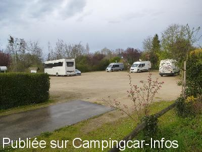
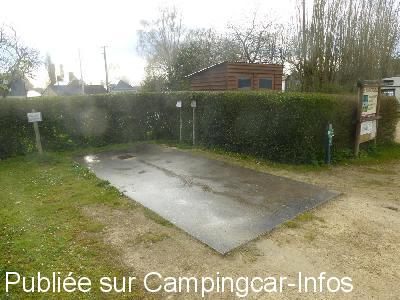
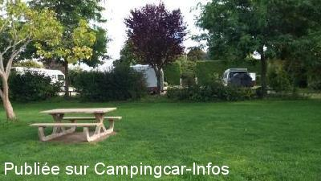
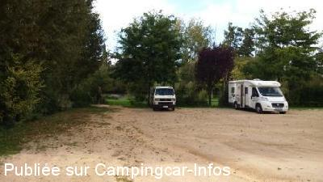
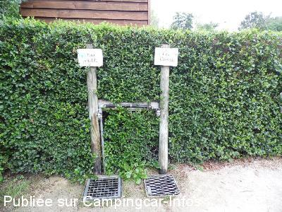
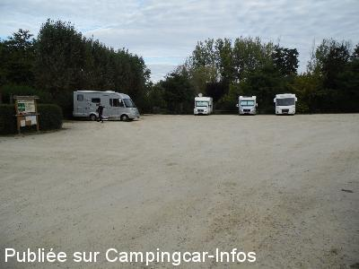

ASN = Aire de services avec stationnement nuit possible de :
LE GUÉDÉNIAU
(N° 108)
Accès/adresse :
La Huberdière D58
49150 LE GUÉDÉNIAU
49150 LE GUÉDÉNIAU
Latitude : (Nord) 47.49364° Décimaux ou 47° 29′ 37′′
Longitude : (Ouest) -0.04497° Décimaux ou 0° 2′ 41′′
Tarif : Gratuit
Une urne est à disposition pour déposer votre obole
Type de borne : Artisanale
Services :


Accès handicapés
Lavabo
Plan d'eau
Table de pique-nique
Autres informations :
25 emplacements sur sol stabilisé, légèrement en pente

Le 05/04/2016 par Papapi AC

Le 05/04/2016 par Papapi AC

Le 08/10/2015 par M&M

Le 08/10/2015 par M&M

Le 14/09/2013 par Louisette

Le 14/09/2013 par Louisette
de
Papapi AC
le 05/04/2016 :
L'avenir de cette aire que tout camping cariste aime mérite que l'urne soit garnie à votre passage. Merci à la commune - La boulangerie ouvre désormais le lundi.
L'avenir de cette aire que tout camping cariste aime mérite que l'urne soit garnie à votre passage. Merci à la commune - La boulangerie ouvre désormais le lundi.
de
JB Shooter
le 25/10/2015 :
Merci à la municipalité de le technique pour cette aire quasiment parfaite.Que manque t-il ? Je me le demande. Nous y sommes allés 5 ou 6 fois en 4 ans et nous avons toujours autant de plaisir à nous y rendre. Superbes promenades en forêt, petit restaurant et boulangerie sympathique, bref un petit paradis. N'oubliez surtout pas votre obole dans l'urne, la municipalité mérite votre générosité.
Merci à la municipalité de le technique pour cette aire quasiment parfaite.Que manque t-il ? Je me le demande. Nous y sommes allés 5 ou 6 fois en 4 ans et nous avons toujours autant de plaisir à nous y rendre. Superbes promenades en forêt, petit restaurant et boulangerie sympathique, bref un petit paradis. N'oubliez surtout pas votre obole dans l'urne, la municipalité mérite votre générosité.
de
M&M
le 08/10/2015 :
Très chouette aire. Seul petit bémol, pas de réseau mobile. Une personne a fait un malaise le jour où nous étions là, et on a eu bien du mal à trouver un endroit avec réseau pour appeler les secours. C'était très stressant.
Néanmoins, nous tenons à remercier la municipalité pour cette magnifique aire. Si elle pouvait faire le nécessaire pour avoir une antenne qui permette de capter le réseau, ce serait parfait.
Très chouette aire. Seul petit bémol, pas de réseau mobile. Une personne a fait un malaise le jour où nous étions là, et on a eu bien du mal à trouver un endroit avec réseau pour appeler les secours. C'était très stressant.
Néanmoins, nous tenons à remercier la municipalité pour cette magnifique aire. Si elle pouvait faire le nécessaire pour avoir une antenne qui permette de capter le réseau, ce serait parfait.
de
Louisette
le 14/09/2013 :
Passage sur cette aire, au calme, WC, lavabo bien entretenus.
Une urne est à disposition pour déposer votre obole.
Passage sur cette aire, au calme, WC, lavabo bien entretenus.
Une urne est à disposition pour déposer votre obole.
de
MICHOU ET JEAN PAUL 59
le 07/11/2012 :
cela fait trois ou quatre fois que nous y repassons avec des copains camping caristes . toujours aussi agréable. petit resto sympathique et fete du gros croissant a ne pas manquer . brocante magnifique .Sinon de très belles randonnées a faire dans la foret a proximité , nous y retournerons .
cela fait trois ou quatre fois que nous y repassons avec des copains camping caristes . toujours aussi agréable. petit resto sympathique et fete du gros croissant a ne pas manquer . brocante magnifique .Sinon de très belles randonnées a faire dans la foret a proximité , nous y retournerons .
de
La Note Bleue
le 07/08/2012 :
Bonjour,
C'est la troisième fois en 10 ans que nous y allons. Je ne devrais pas l'écrire car trop de camping-caristes vont s'y rendre mais c'est un véritable havre de paix, calme et ressourçant.
Par ailleurs, dans un village qui perd des habitants (ceux qui sont présents sont accueillants), l'endroit est très bien entretenu et fleuri. L'on peut pêcher dans l'étang (brochets, gardons, etc.) avec la carte nationale.
Inconvénient majeur: des belles cales sont nécessaires.
Inconvénient mineur mais tout de même (!): le boulodrome est en pente, ce qui est râlant quand on amène une boule au "petit" et qu'elle dégringole sur quelques dizaines de centimètres :)
Ah, n'oublions pas de laisser un "petit quelque chose" dans la borne située à l'aire de services (la municipalité et les employés le méritent bien).
Bonjour,
C'est la troisième fois en 10 ans que nous y allons. Je ne devrais pas l'écrire car trop de camping-caristes vont s'y rendre mais c'est un véritable havre de paix, calme et ressourçant.
Par ailleurs, dans un village qui perd des habitants (ceux qui sont présents sont accueillants), l'endroit est très bien entretenu et fleuri. L'on peut pêcher dans l'étang (brochets, gardons, etc.) avec la carte nationale.
Inconvénient majeur: des belles cales sont nécessaires.
Inconvénient mineur mais tout de même (!): le boulodrome est en pente, ce qui est râlant quand on amène une boule au "petit" et qu'elle dégringole sur quelques dizaines de centimètres :)
Ah, n'oublions pas de laisser un "petit quelque chose" dans la borne située à l'aire de services (la municipalité et les employés le méritent bien).
de
Anne Maplesden
le 24/09/2011 :
A very peaceful aire in lovely surroundings. We walked during the day using a walks booklet bought at the bakers together with great 'pain'. We spent a quiet night with mostly french vans. Thanks to the village for a pleasant stay......we shall return next year.
A very peaceful aire in lovely surroundings. We walked during the day using a walks booklet bought at the bakers together with great 'pain'. We spent a quiet night with mostly french vans. Thanks to the village for a pleasant stay......we shall return next year.
de
jean paul et michou 59
le 10/06/2011 :
cela fait plusieurs fois que nous nous y arretons . nous venons d y passer 15 jours au mois de mai ; aire superbe et tres tranquille ( peche promenade en foret,petit resto sympa , boulangerie ) BAUGE a proximite pour les courses plus importantes ; gratuite , sanitaires ,plein d eau et vidage , merci a la mairie pour cet arret que nous aimerions trouver un peu plus souvent . a la prochaine .
cela fait plusieurs fois que nous nous y arretons . nous venons d y passer 15 jours au mois de mai ; aire superbe et tres tranquille ( peche promenade en foret,petit resto sympa , boulangerie ) BAUGE a proximite pour les courses plus importantes ; gratuite , sanitaires ,plein d eau et vidage , merci a la mairie pour cet arret que nous aimerions trouver un peu plus souvent . a la prochaine .
de
port jp
le 03/06/2011 :
aire comme on en reve je me servi du barbak pour ma cote a l os de vrais vacances jpp59
aire comme on en reve je me servi du barbak pour ma cote a l os de vrais vacances jpp59
de
CHL
le 28/07/2010 :
Aire vraiment très agréable, nous avons passé une nuit calme. Merci à la municipalité pour cette
superbe aire.
Aire vraiment très agréable, nous avons passé une nuit calme. Merci à la municipalité pour cette
superbe aire.
de
Elter Philippe
le 28/05/2009 :
Super aire! Merci à la mairie! Pêche, balades, etc... Boulangerie à proximité, le restaurant fermé est à vendre. Grand calme, même la cloche de l'église s'arrête à 23 heures
Philippe
Super aire! Merci à la mairie! Pêche, balades, etc... Boulangerie à proximité, le restaurant fermé est à vendre. Grand calme, même la cloche de l'église s'arrête à 23 heures
Philippe
de
manu25000
le 21/07/2008 :
Superbe aire. Très calme. Tout gratuit (obole à la mairie bien méritée). Très bien entretenue, cadre magnifique, nombreuses balades à faire. Commerçant très sympa. A proximité, grand barbecue et tables sous abri (30 places). Jolis coins de pêche. Jeu de boules.
Superbe aire. Très calme. Tout gratuit (obole à la mairie bien méritée). Très bien entretenue, cadre magnifique, nombreuses balades à faire. Commerçant très sympa. A proximité, grand barbecue et tables sous abri (30 places). Jolis coins de pêche. Jeu de boules.